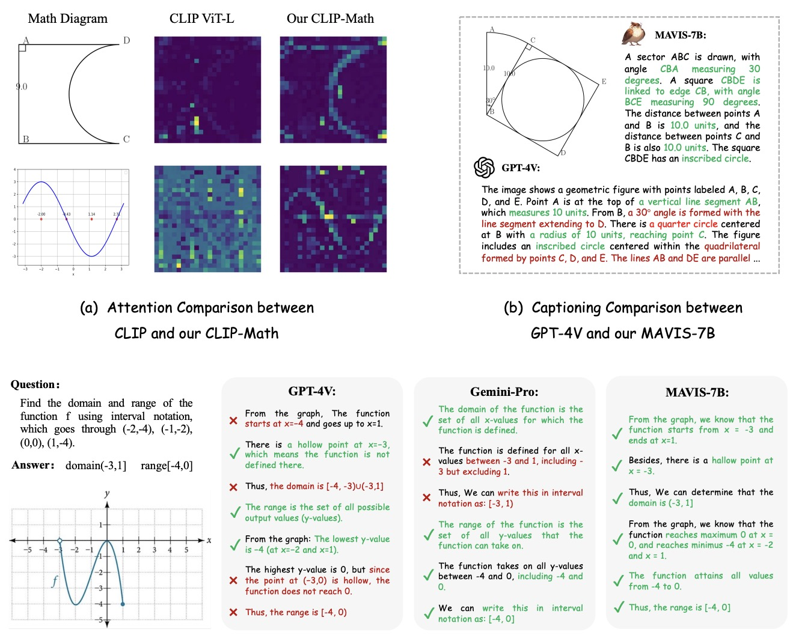
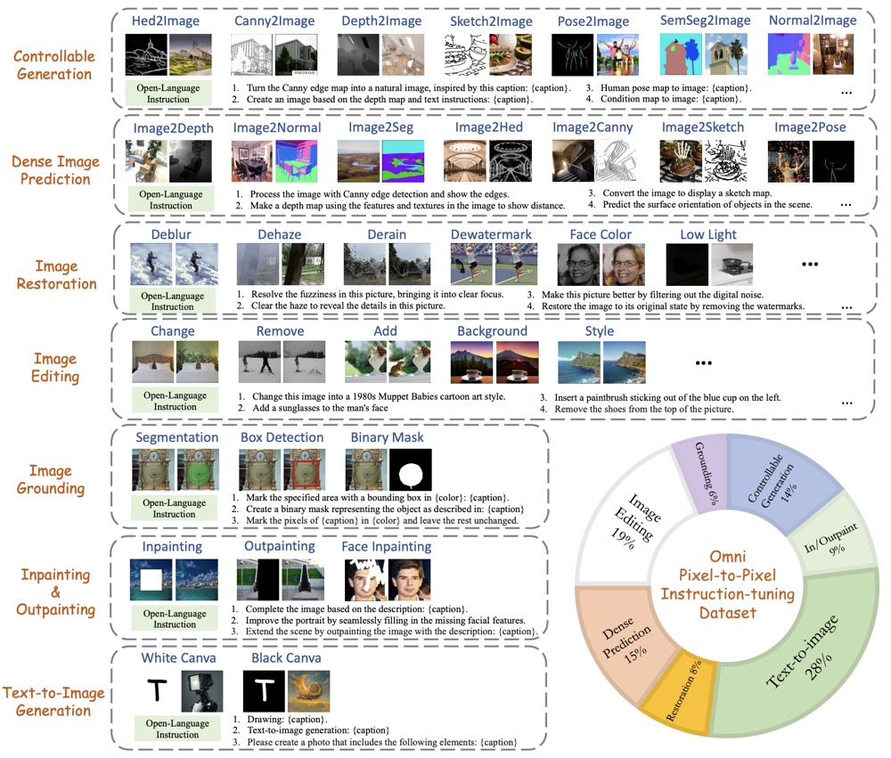
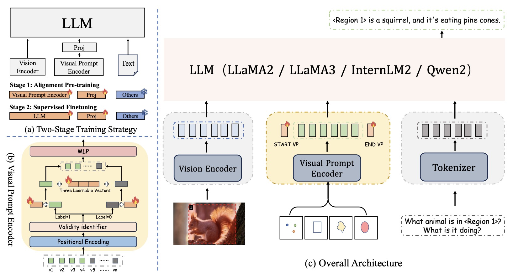
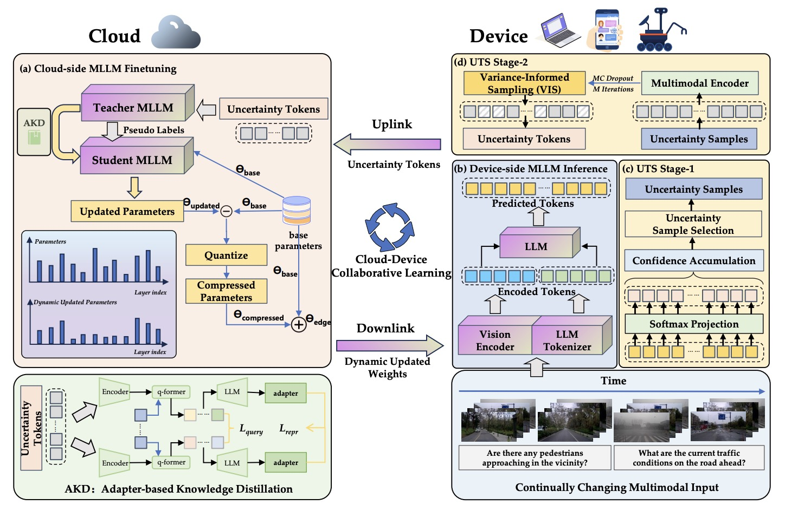
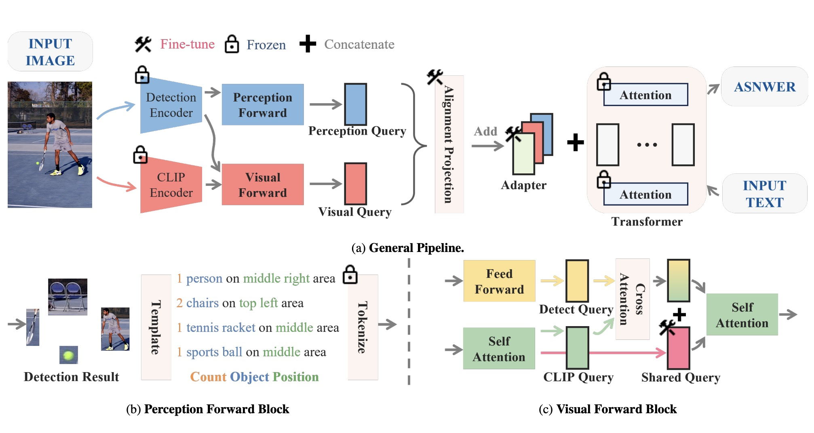

Xinyu Wei(魏 心宇)🏁 I am sincerely seeking PhD opportunities for Fall 2025! I explored various paths and discovered that research is truly my passion and I hope to make research my lifelong career! 🔍 I study Large Language/Vision Models, Modality Alignment, Image Generation. 🤩 Feel free to reach out for any academic collabs !! |

|
Education[2022-2025] M.S. in Software Engineering as Merit Student🎉, Peking University, Supervised by Prof. Shanghang Zhang [2018-2022] B.E. in Computer Science with Distinction🎉, Wuhan University |
News[2025.01] Three papers accepted by ICLR 2025🎉 [2024.03] One paper accepted by CVPR 2024🎉, One paper accepted by CVPR Worhshop💪 [2020.02] Meritorious Winner (Top 6% Globally) at Mathematical Contest in Modeling (MCM)🎉 |
Internship[2025.01-Now] Intern at Y-Lab📖, OPPO, Supervised by Prof. ZHANG Lei John(FIEEE) [2024.04-2024.10] Intern at General Vision Group📖, Shanghai AI Lab, Supervised by Dr. Peng Gao [2023.04-2024.04] Intern at NLC Group🔧, MicroSoft Research Asia, Supervised by Dr. Yan Xia |
Selected Publications |
|  |
MAVIS: Mathematical Visual Instruction Tuning with an Automatic Data Engine
Renrui Zhang*, Xinyu Wei*, Dongzhi Jiang, Ziyu Guo, Yichi Zhang, Chengzhuo Tong, Jiaming Liu, Aojun Zhou, Shanghang Zhang, Peng Gao, Hongsheng Li ICLR2025 Arxiv / Code🔥 📐 The first public large-scale multi-modal mathematical dataset for tuning large VLMs |
|  |
PixWizard: Versatile Image-to-Image Visual Assistant with Open-Language Instructions
Weifeng Lin*, Xinyu Wei*, Renrui Zhang*, Le Zhuo*, Shitian Zhao, Siyuan Huang, Huan Teng, Junlin Xie, Yu Qiao, Peng Gao, Hongsheng Li ICLR2025 Arxiv / Code🔥 🧑🎨 A unified DiT framework and large-scale dataset with any-resolution processing, capable of 20+ vision tasks including both understanding and generating through language instructions. |
|  |
Draw-and-Understand: Leveraging Visual Prompts to Enable MLLMs to Comprehend What You Want
Weifeng Lin*, Xinyu Wei*, Ruichuan An, Peng Gao, Bocheng Zou, Yulin Luo, Siyuan Huang, Shanghang Zhang, Hongsheng Li ICLR2025 Arxiv / Code🔥 / Project Page 🎨 A general framework integrating visual prompting (points/boxes/shapes) through MDVP-Instruct-Data (1.2M multi-domain triplets) and MDVP-Bench, boosting pixel-level comprehension and visual prompt interaction for MLLMs. |
|  |
Cloud-Device Collaborative Learning for Multimodal Large Language Models
Guanqun Wang, Jiaming Liu, Chenxuan Li, Junpeng Ma, Yuan Zhang, Xinyu Wei, Kevin Zhang, Maurice Chong, Ray Zhang, Yijiang Liu, Shanghang Zhang CVPR2024 Arxiv 🤖 A lifelong-learning framework that boosts compressed MLLMs' on-device performance via uncertainty-guided token filtering, adapter-based knowledge transfer, and dynamic weight quantization. |
Selected Preprints |
|  |
MR-MLLM: Mutual Reinforcement of Multimodal Comprehension and Vision Perception
Guanqun Wang*, Xinyu Wei*, Jiaming Liu, Ray Zhang, Yichi Zhang, Kevin Zhang, Maurice Chong, Shanghang Zhang Arxiv 🔧 The pioneering studies investigated the infusion of heterogeneous visual information into MLLMs through multi-task vision encoder integration |
HobbiesPhotography 📸, Body Building 💪, Movie 🎬, BasketBall 🏀, Video Games 🎮, Snorkeling 🤿 I read history and philosophy 📖 I travel all around the world 🌏 |